Week 2 — Aquatic composition and carbonate chemistry
Environmental Chemistry
About this lecture
Over recent decades, many lakes and rivers in Sweden and the rest of northern Europe have become browner. Researchers call it brownification. Water utilities notice it first: browner raw water needs more treatment before it can be drunk.
The colour comes from dissolved organic matter washed in from forest soils and peat.
Today you will learn to:
read what DOC measures, and what it does not;
explain how organic acids bind protons and metals;
connect colour to light in the water;
calculate an idealised oxygen demand and say when water runs out of oxygen.
Brown, humic river water, Korkeakoskenjoki, Finland. Photo: Anna Reponen, CC BY 4.0, Wikimedia Commons.
Where the organic matter comes from
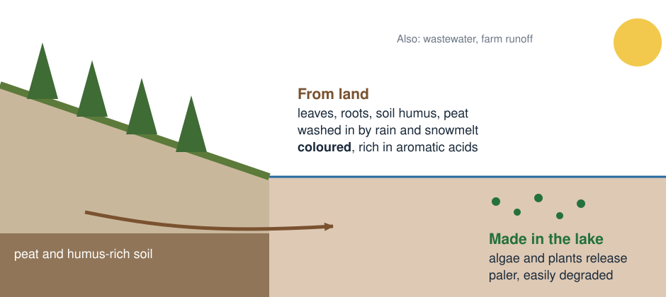
Most dissolved organic matter in a boreal lake comes from land: decaying leaves, roots, soil humus and peat. It is coloured and rich in organic acids. A smaller part is made in the lake by algae and plants. That part is paler and is eaten quickly by bacteria.
Not one molecule: a size continuum
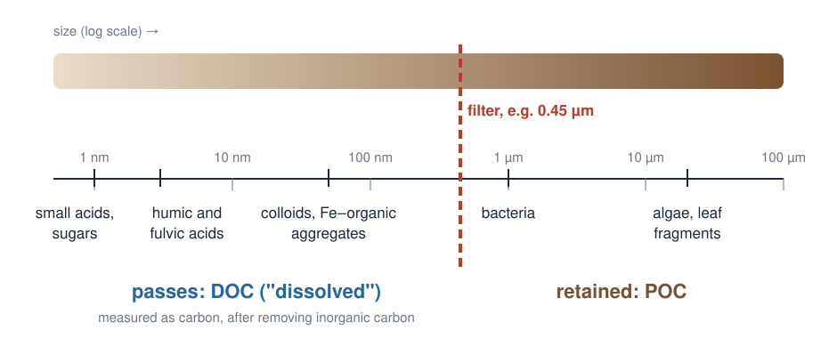
Natural organic matter ranges from small acids to large particles. DOC (dissolved organic carbon) is the carbon in whatever passes the chosen filter; POC is what stays behind. DOC gives an amount of carbon, in mg C/L. It does not give a structure, a charge or a degradation rate.
Organic acids carry charge
Humic substances carry carboxyl (–COOH) and phenolic (–OH) groups. Both are weak acids, so the ratio rule from the first water lecture applies:
At natural pH most carboxyl groups have lost H⁺; most phenolic groups have not.
So brown water contains many organic anions. They supply H⁺, which is why many humic lakes are naturally acidic, and they count in the charge balance.
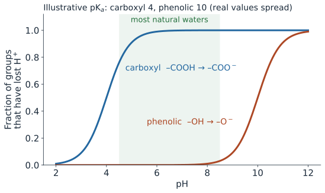
Negative sites bind metals
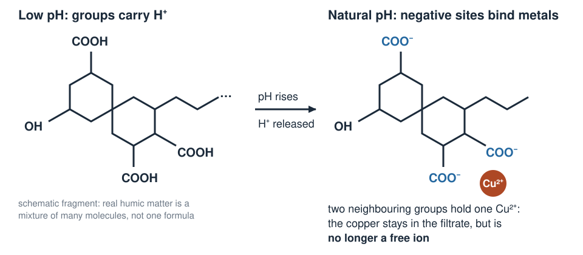
Neighbouring negative groups can hold a metal ion such as Cu²⁺, Pb²⁺ or Al³⁺ in a complex. The metal stays in the filtered, “dissolved” fraction, but it is no longer a free ion. No electron moves: this is binding, not redox.
Same total, different free metal
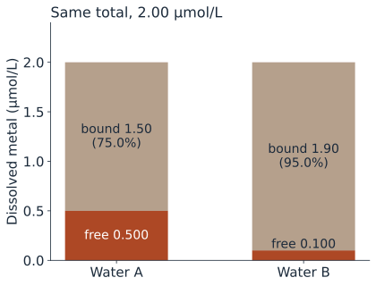
Waters A and B both contain 2.00 µmol/L dissolved metal. Free metal is 0.500 in A and 0.100 µmol/L in B.
Bound in A: (2.00 − 0.500)/2.00 = 75.0%
Bound in B: (2.00 − 0.100)/2.00 = 95.0%
The free ion differs fivefold with identical totals. The free ion is often the best single guide to what organisms take up, so several regulators, including in the EU, adjust metal limits for DOC and pH.
Colour: brown water absorbs blue light
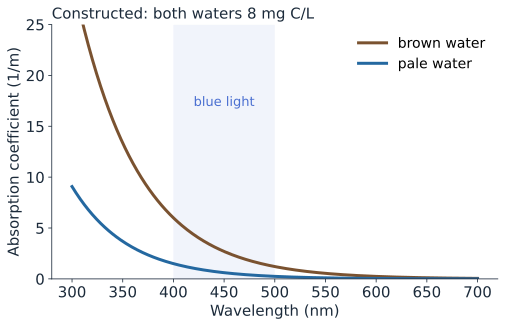
Coloured organic matter absorbs strongly in the ultraviolet and blue, and less towards red. Water that removes blue and passes yellow-red looks brown.
Absorption falls roughly exponentially with wavelength. How steeply, and how much absorption per gram of carbon, depends on the source of the material.
The two constructed waters have the same DOC but differ fourfold in colour. Colour is a property, not a direct measure of carbon.
Less light, shallower life
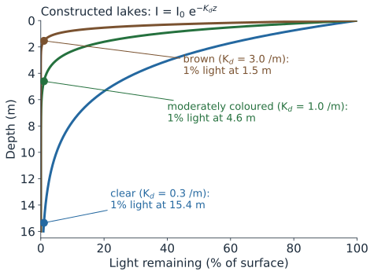
Light decreases exponentially with depth:
I(z)=I_0\,e^{-K_d z}
The attenuation coefficient Kd grows with colour. Plants and algae need roughly 1% of surface light.
clear lake, Kd = 0.3 /m: 1% at 15 m
brown lake, Kd = 3 /m: 1% at 1.5 m
Browning squeezes photosynthesis into a thin surface layer and lets less UV reach the water below.
Measuring colour in the field
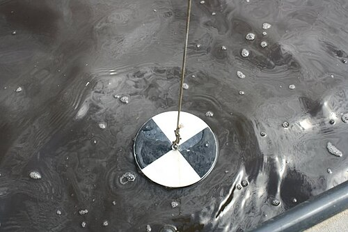
Secchi disk, Cochiti Lake, New Mexico, USA. Photo: U.S. Army Corps of Engineers, public domain, Wikimedia Commons.
A Secchi disk is lowered until it disappears. The depth is a simple measure of clarity, used in lake monitoring for over a century.
But clarity mixes several causes. Water can darken while DOC stays nearly constant, if:
the organic matter changes composition (more aromatic, more coloured);
iron increases: Fe(III) adds colour of its own and binds to organic matter;
particles increase.
Measure absorbance, DOC, iron and particles separately before choosing an explanation.
Sunlight changes organic matter
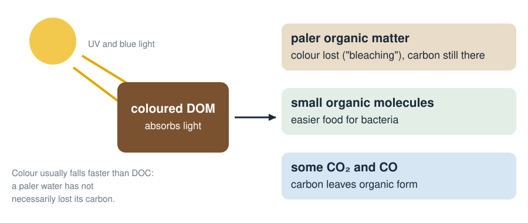
Light absorbed by coloured organic matter breaks its light-absorbing groups. The water becomes paler, small molecules form that bacteria use readily, and some carbon is released as CO₂. A loss of colour therefore does not prove a loss of carbon.
Organic matter consumes oxygen
Use CH₂O as a stand-in for simple organic matter:
\mathrm{CH_2O+O_2\rightarrow CO_2+H_2O}
1 mol C uses 1 mol O₂, so 12.0 g C uses 32.0 g O₂.
Worked example: complete aerobic oxidation of 3.00 mg C/L:
3.00 × 32.0/12.0 = 8.00 mg O₂/L
That is close to all the oxygen water holds: about 9 mg/L at 20 °C.
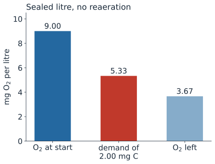
Ultimate demand versus what you measure
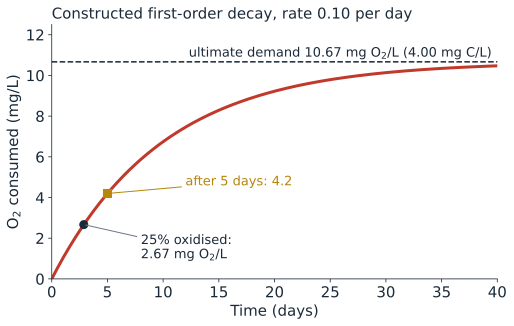
The 8.00 mg/L is an ultimate, stoichiometric demand. It assumes complete oxidation.
Real organic matter degrades at different speeds. If only 25% of 4.00 mg C/L is oxidised during an observation period:
consumed: 1.00 mg C → 2.67 mg O₂/L
complete oxidation would need 10.67 mg O₂/L
A 5-day test (BOD₅) measures the early part of the curve, not the ultimate demand.
When demand outruns supply
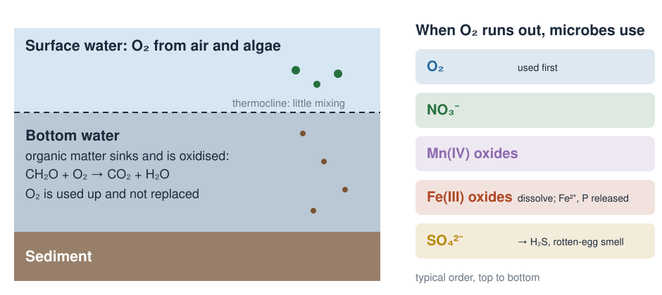
In summer many lakes stratify: warm surface water floats on cold bottom water. The bottom water is cut off from the air, but organic matter keeps sinking into it. Oxygen falls, and microbes then use other electron acceptors: nitrate, manganese and iron oxides, and finally sulfate.
A large-scale case: the Baltic Sea
Cyanobacteria bloom in the Baltic Sea, July 2025 (Landsat). NASA Earth Observatory, public domain, Wikimedia Commons.
The Baltic has some of the largest low-oxygen bottom areas of any sea. Salty, dense water at depth is renewed only occasionally.
Nutrients feed algal and cyanobacterial blooms. When the organic matter sinks and decays it consumes oxygen. Without oxygen, iron oxides in the sediment dissolve and release phosphate, which feeds the next bloom.
The same chemistry as a stratified lake, on a regional scale.
Check yourself
Two waters both have 6 mg/L DOC. Name three properties that could still differ.
Why can a humic lake have pH 5.5 without any acid rain?
Total dissolved copper is unchanged, but DOC doubles. What would you expect for free Cu²⁺?
Complete oxidation of 1.50 mg C/L of CH₂O-like substrate needs how much O₂?
Water becomes paler over a sunny summer. Has its DOC necessarily fallen?
Back to browning: why, and so what?
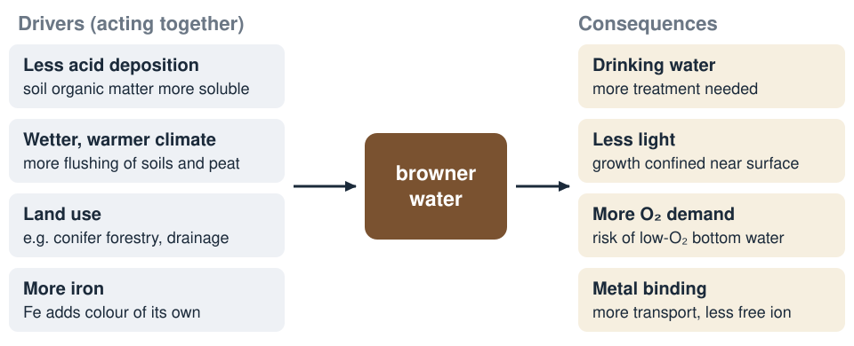
Several drivers act together, and their importance differs between catchments. Recovery from acid rain is one of the best supported: as sulfate deposition fell, soil organic matter became more soluble. Each consequence on the right uses a chemical idea from today.
Browning and drinking water
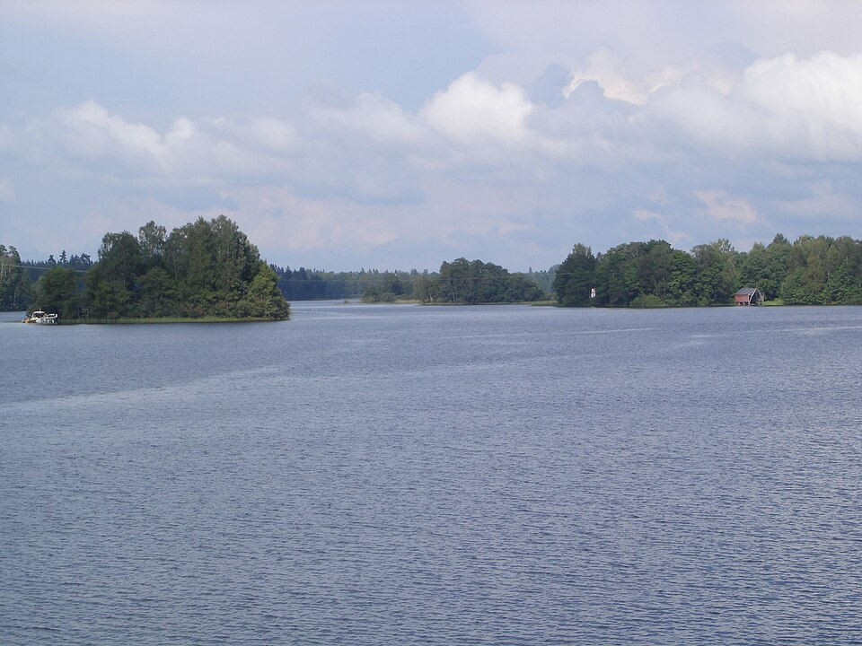
Lake Bolmen at Piksborg, Småland. Photo: Eddie001, public domain, Wikimedia Commons.
Bolmen in Småland supplies drinking water to a large part of Skåne. Lakes like it are watched closely for colour and DOC.
More organic matter means:
more coagulant to remove colour and DOC;
organic matter that reacts with chlorine to form unwanted disinfection by-products;
organic matter left in pipes feeds bacterial regrowth.
So browning is a chemistry problem for water treatment, the topic of a later unit.
Common mistakes to avoid
“DOC is a substance.” It is the carbon in an operationally filtered fraction.
“Brown means more carbon.” Colour per unit carbon varies; iron adds colour.
“Dissolved metal is free metal.” Organic complexes pass the filter.
“More DOC means less dissolved metal.” It often means more dissolved but less free metal.
“CH₂O is the formula of humus.” It is a stoichiometric stand-in.
“BOD₅ is the total demand.” It measures the early, fast part.
“Paler water has lost carbon.” Photobleaching removes colour first.
Explore: oxygen demand in a sealed bottle
4.00 mg C/L has an ultimate demand of 10.67 mg O₂/L; at 0.10 per day, 4.20 mg O₂/L is used in 5 days.
 Brown, humic river water, Korkeakoskenjoki, Finland. Photo: Anna Reponen, CC BY 4.0, Wikimedia Commons.
Brown, humic river water, Korkeakoskenjoki, Finland. Photo: Anna Reponen, CC BY 4.0, Wikimedia Commons. Cyanobacteria bloom in the Baltic Sea, July 2025 (Landsat). NASA Earth Observatory, public domain, Wikimedia Commons.
Cyanobacteria bloom in the Baltic Sea, July 2025 (Landsat). NASA Earth Observatory, public domain, Wikimedia Commons.